Work
Burning Up2021Graphite on paper with digital color, 8.5 × 11 in.
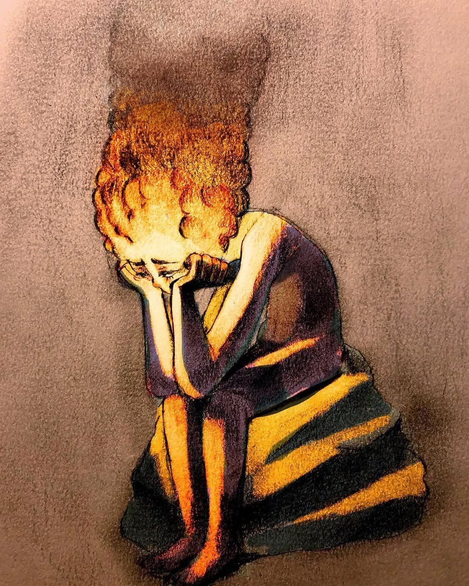
Moments Before the Destruction of the Tower of Babel2018Charcoal on paper, 25 × 30 in.
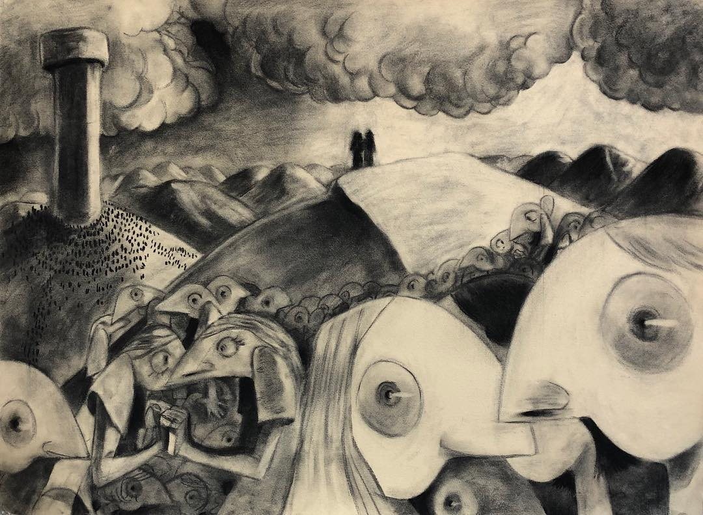
Concentration piece, Georgia State University.
Intimate Distance #12018Charcoal on paper
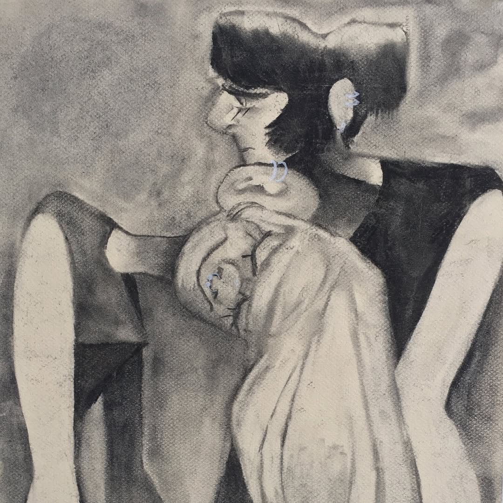
From the Intimate Distance series.
Laying Down2020Charcoal on paper with digital color
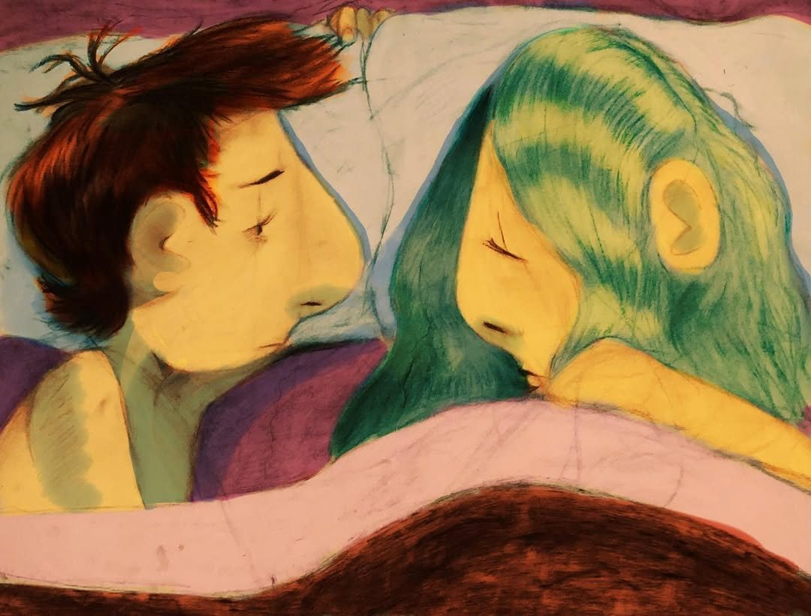
From the Intimate Distance series.
Intimate Distance #42018Oil on canvas
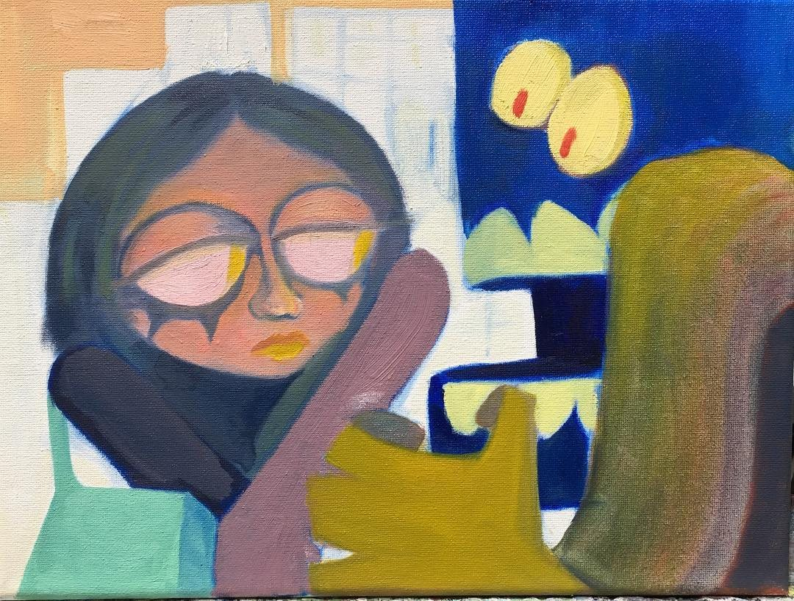
From the Intimate Distance series.
In the Clouds2020Graphite on paper with digital color
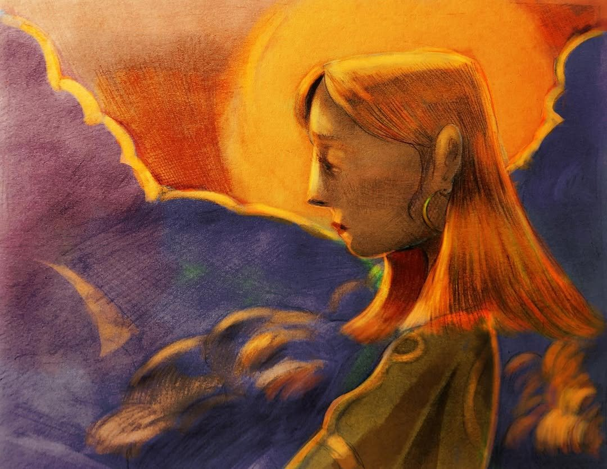
Rocky Mountains, 20222019Charcoal on paper
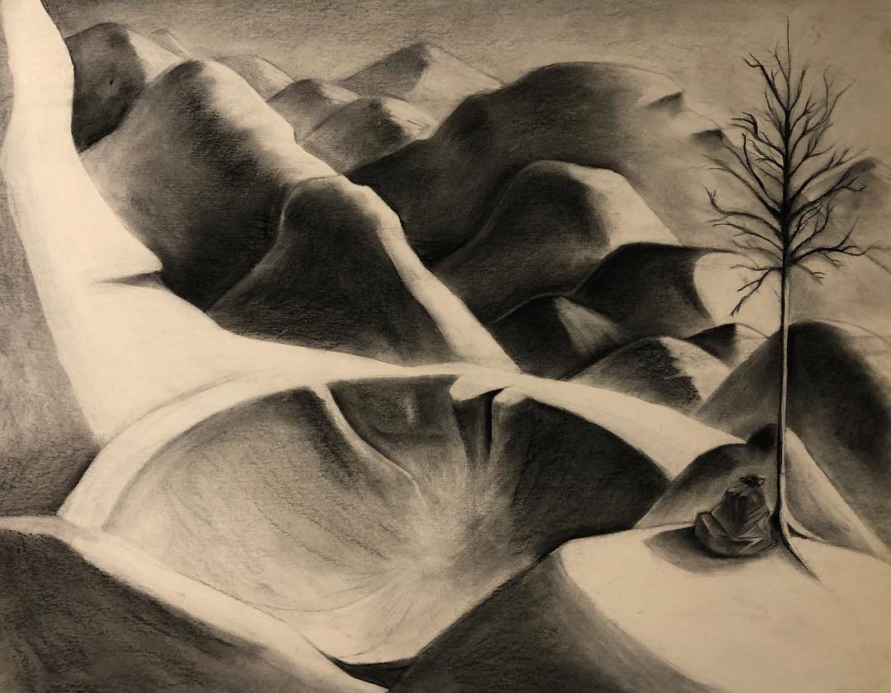
Made for a student-led gallery show.
Danger IncorporatedDigital illustration
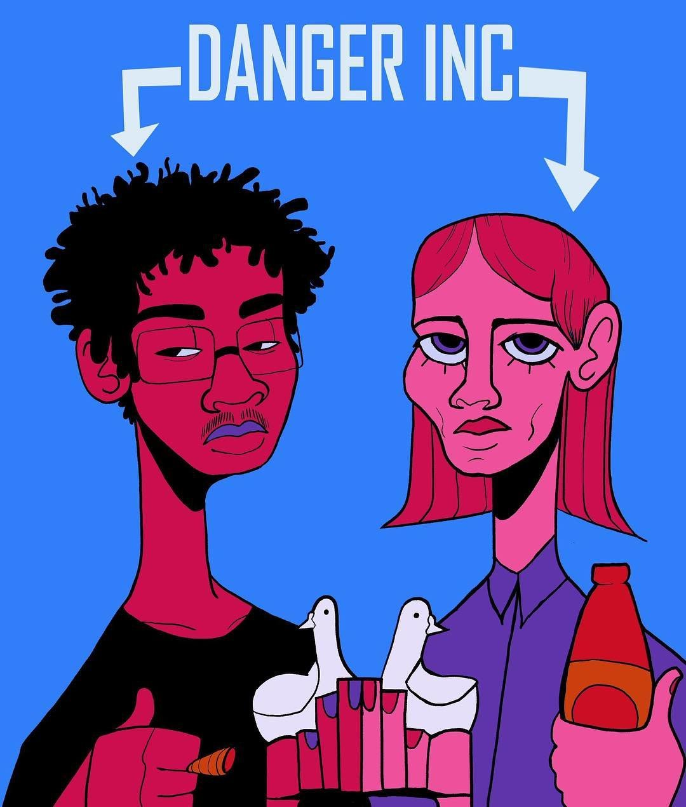
Fan art for the Atlanta group Danger Incorporated.
Character turnaround2023Digital
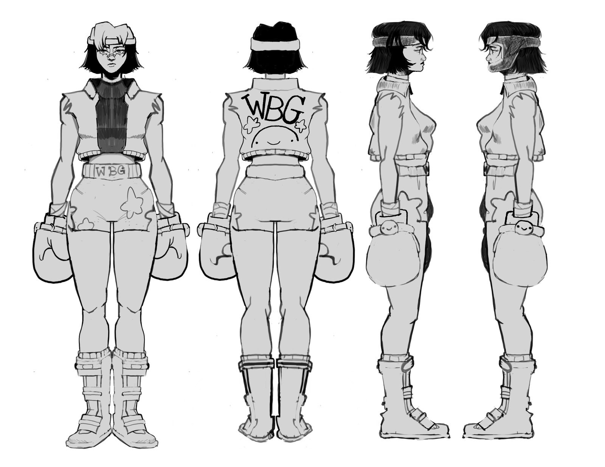
Concept art for an unreleased project.
Trollgang at Dreamhack Atlanta2025Digital, T-shirt design
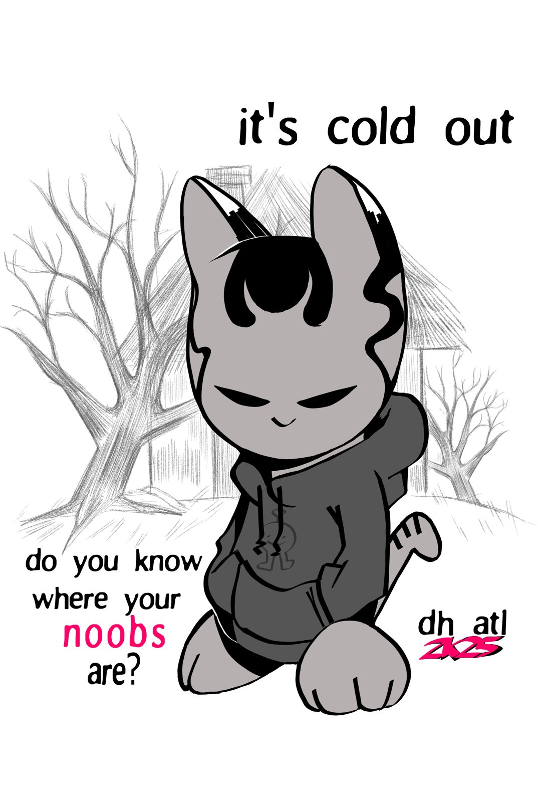
Video
Timewaster 90002023Video podcast
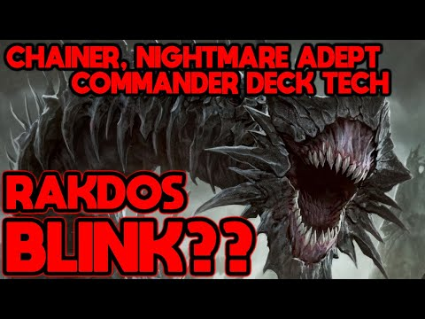
Magic: the Gathering podcast, hosted by Alex Brooks and Miller.
Podcast clip short-form2023Youtube, shortt
Rakdos Blink: Chainer, Nightmare Adept deck tech2023YouTube, long form
holding hands2019Animated short
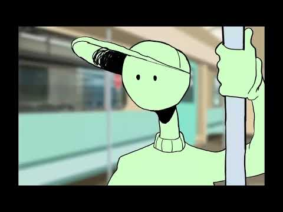
Animated by Alex Brooks. Voiced by Alex Brooks and Jack Clancey. Opens on YouTube.
Résumé
Experience
- Freelance video production, Atlanta. 2019 to now.
Short and long-form editing for personal projects and film competitions. Most recently podcasting at Timewaster 9000, including editing video and audio, short form, and week-by-week production. - Freelance artist, Atlanta. 2018 to now.
Drawing, animation, and graphic design for small clients and independent projects. Recent jobs include the Trollgang shirt for Dreamhack Atlanta 2025 and character concept art for an unreleased project (2023). - CardsHQ, TCG Operations Assistant & TCG Buying. 2024 to now.
Overseeing thousands of individual items in quickly growing collectibles retail space. In charge of repricing, active procurement, and back-of-house internal processes for purchase orders.
Education
- Georgia State University, BFA, Drawing and Painting. 2015-2019
Skills
- Charcoal, graphite, and oil
- Digital illustration and color
- Character design and turnarounds
- Hand-drawn animation
- Video editing and voice-over
- Running a YouTube channel and a TikTok
- Software: Adobe suite (especially Premiere and Photoshop), Microsoft office suite, DAW programs like Logic and FL Studio
Shows and series
- Student-led gallery show, Georgia State University, 2019
- Intimate Distance, charcoal and oil series, 2018 to 2020
- holding hands, animated short, 2019
About
Alex Brooks is an Atlanta-native visual artist, video producer, and occasional writer who has spent their career creating stories through drawings, animations, and videos.
Graduating from Georgia State University with a Bachelor's in Fine Arts and a concentration in Drawing and Painting, they've worked freelance to help independent visions become reality. From video essays, to comedy skits, all the way to heartfelt animation, Alex tries to cover the entire human experience, and not just the serious parts.
Alex's serious visual work is focused on intimacy at its proxemic level, but when necessary can lean back from the stuffy gallery-talk to just talk about their hobbies in a detailed way.